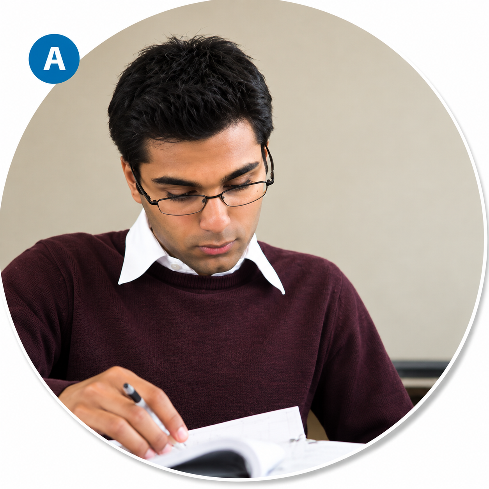
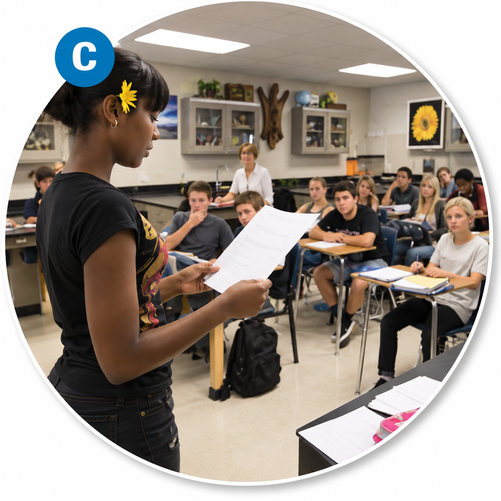
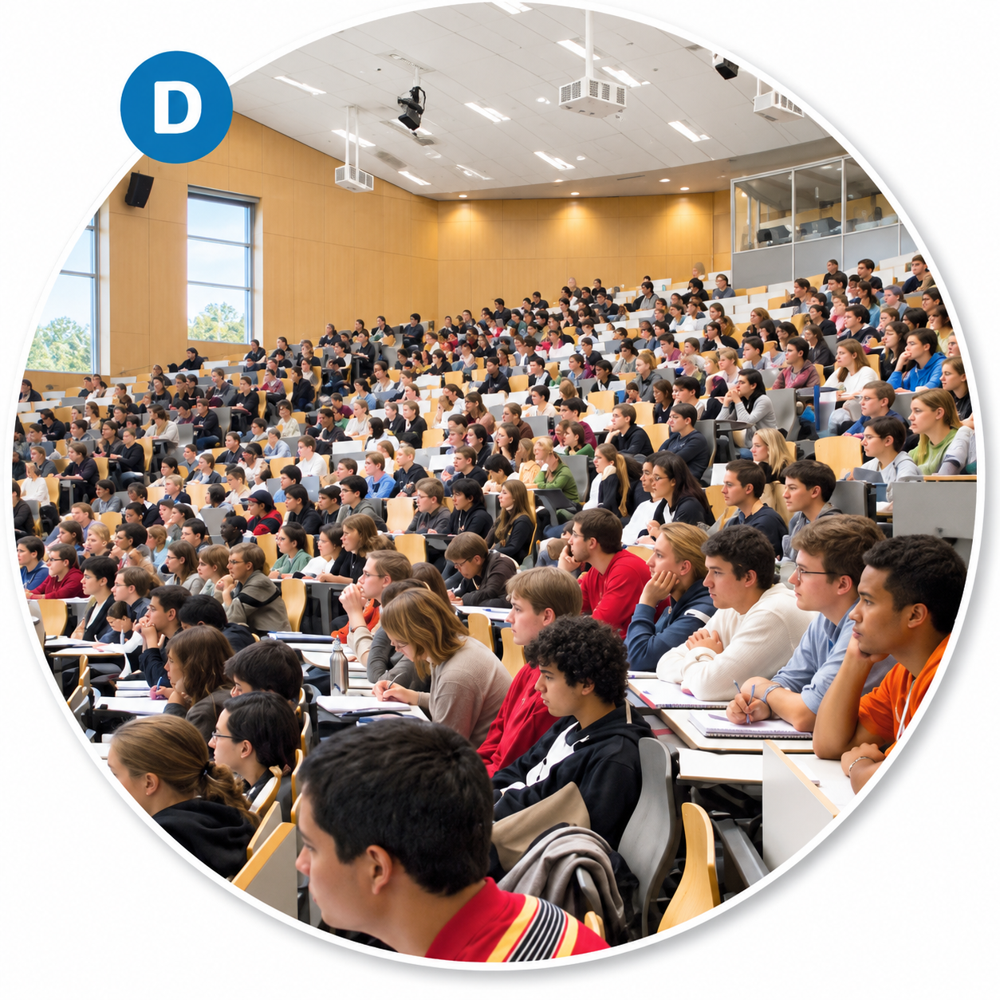

Wordlist — Academic Life
These words come up throughout today's tasks on lectures, tutorials, and study habits.
| word / phrase | meaning | example | common collocations |
|---|---|---|---|
| curriculum | the subjects or courses taught in a school, college, or program | The university recently updated its curriculum to include more practical modules. | a broad/updated curriculum |
| plagiarism | copying someone else's work or ideas and presenting them as your own | Plagiarism is treated as a serious academic offence at most universities. | accused of plagiarism |
| dissertation | a long, formal piece of writing on a topic, usually required for a degree | She spent most of her final year working on her dissertation. | write/submit a dissertation |
| peer | someone of the same age, status, or ability as you | Peer feedback can be just as valuable as a teacher's comments. | peer feedback/review/pressure |
| procrastinate | to delay or put off doing something that needs to be done | Many students procrastinate until the night before a deadline. | tend to procrastinate |
| comprehensive | complete and including everything necessary | The course offers a comprehensive overview of modern history. | a comprehensive guide/overview |
| feedback | comments or information about performance, given to help someone improve | Constructive feedback helped her improve her essay significantly. | give/receive constructive feedback |
| discipline | a particular subject or area of academic study | Economics is a discipline that combines mathematics and social science. | an academic discipline |
| workload | the amount of work a person is expected to do | Students often struggle to manage a heavy workload during exam season. | a heavy/manageable workload |
| retain | to keep hold of information in your memory | Repetition helps students retain new vocabulary more effectively. | retain information/knowledge |
Complete the sentences with words from the table.
1. The department is reviewing its to better prepare students for the workplace.
2. Submitting someone else's essay as your own is a clear case of .
3. His final examined the effects of social media on teenagers.
4. review can help students spot mistakes they might otherwise miss.
5. It's easy to when a deadline still feels far away.
6. The textbook gives a introduction to the subject, covering every major topic.
7. Her tutor gave her detailed on how to improve her argument.
8. Linguistics is a fascinating academic to study.
9. Balancing a heavy with a social life is one of the biggest challenges of university.
10. Testing yourself regularly is one of the best ways to what you've learned.
Match each word to its definition.
1. procrastinate —
2. comprehensive —
3. retain —
4. plagiarism —
5. workload —
B the amount of work a person is expected to do
C to delay or put off doing something
D presenting someone else's work or ideas as your own
E to keep hold of information in your memory
Read this short text. All ten words from the table are highlighted.
Every year, the department reviews its curriculum to make sure students are learning what actually matters. Even so, success still depends heavily on the individual: those who procrastinate until the last minute rarely produce their best work, while students who manage their workload carefully tend to retain far more of what they study. A good discipline to study is only half the battle — the other half is learning how to use feedback well. Whether it's a professor's notes or peer comments from a classmate, constructive feedback is often the fastest way to improve. Of course, none of this excuses cutting corners: plagiarism, even when unintentional, is treated extremely seriously, and a dissertation in particular is expected to be entirely the student's own work. In the end, a comprehensive understanding of a subject is built slowly, one honest essay at a time.
Now test yourself — choose the word that best fits each sentence.
1. Waiting until the last possible moment to start an assignment is a classic example of choosing to ___.
2. A university found several sentences copied directly from another author's book — a clear case of ___.
3. Chemistry, history, and economics are all examples of academic ___.
4. Reviewing your notes soon after a lecture makes it much easier to ___ the material long-term.
5. Her tutor's ___ pointed out exactly which parts of the essay needed more evidence.
Academic Situations
Match each photo to the activity it shows.



Now describe each photo in at least 50 words.
Describe what you see, then explain more about what this process usually involves. The first one is done for you as an example.
Example:
In this photo, a young man is carefully reviewing a printed draft of his work, pen in hand, checking every detail before finalising it. Writing a term paper like this usually involves weeks of research, drafting, and editing, and requires students to organise their ideas clearly while properly referencing every source they use.
Speaking Part 1
Answer each question naturally. You only get one attempt per question, so make sure you're ready before you start recording.
Podcast — Study Group
Before you listen, match the vocabulary you'll hear to its definition.
1. to learn something by heart —
2. annoyed —
3. go ahead —
4. an assignment —
5. a moderator —
6. a compromise —
B an agreement in which people in an argument reduce or change what they are asking for in order to agree
C an informal expression used to give someone permission to start doing something
D irritated, angry
E to learn something so that you can say it from memory
F a manager of a public discussion
Now listen to the podcast.
Task 1 — Circle the best answer.
1. There are ___ who can do the first meeting of the study group.
2. They don't want to meet in their current place because...
3. They decide to meet...
4. They have another seminar...
5. How long will their study group be?
6. Their final exam...
Task 2 — Match the expressions with "way" to their meanings.
1. find a way —
2. way off —
3. there's no way —
4. go away —
5. in a big way —
B make something possible
C leave
D very much
E a long time from now
Listening Section 3
Before you listen, match each word to its definition.
Listen to the first part.
Questions 1–2 — Which TWO activities will students do as part of Amanda's assignment?
A. analyse their own speech
B. record other students' speech
C. read something from a book
D. repeat part of a lecture
E. remember part of a lecture
Questions 3–4 — Which TWO features must Amanda check when she chooses the extract?
A. the time it takes to read
B. the overall organisation
C. the number of words
D. the number of sentences
E. the inclusion of key ideas
Listen to the second part.
Questions 5–8 — Which comments do the speakers make about each lecture?
5. History of English —
6. Gestures and signs —
7. Intonation patterns —
8. Language and rhythm —
B It took a long time to write.
C It was shorter than the others.
D It was well structured.
E The content is relevant.
F The topic was popular.
Questions 9–10 — Which TWO pieces of equipment will the students use in the study?
Write no more than two words for each answer.
9.
10.